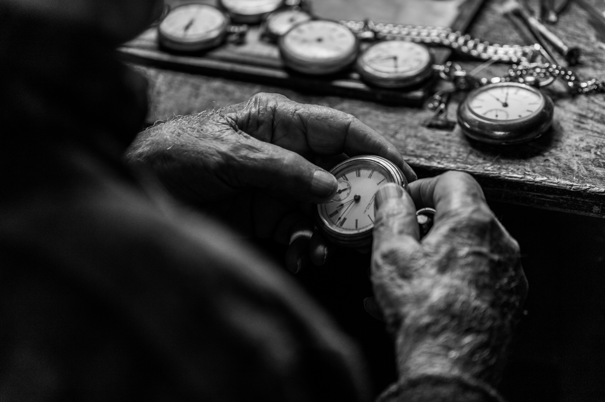
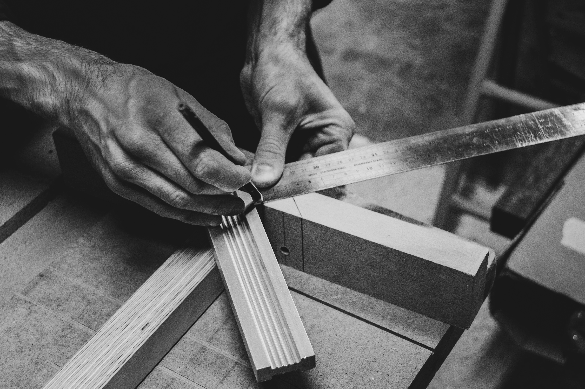
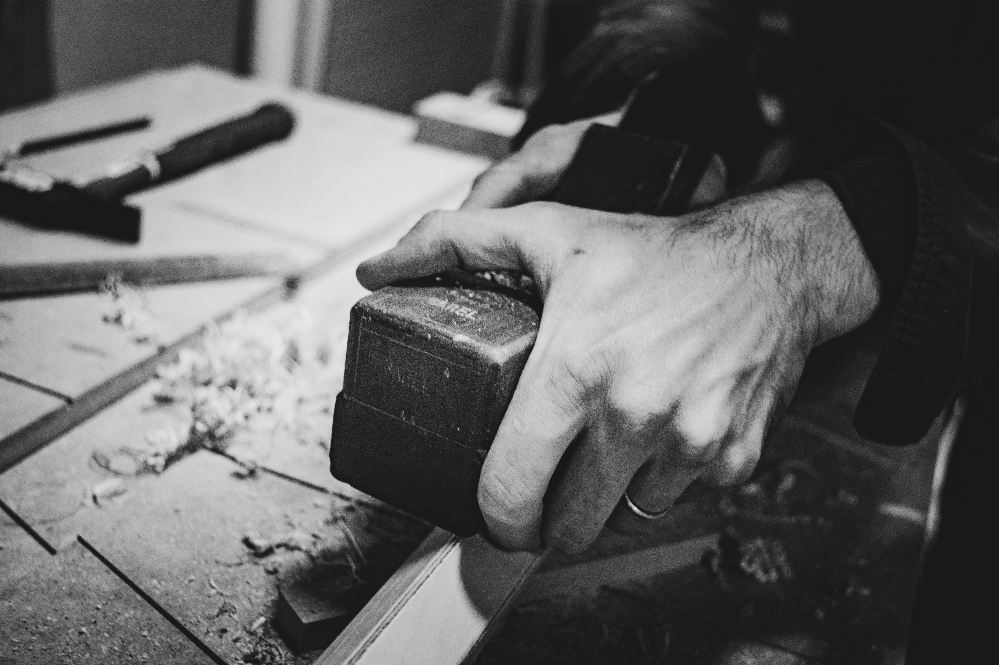
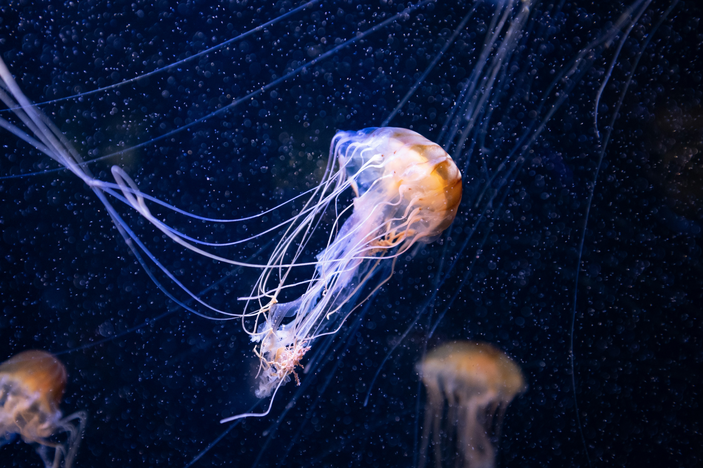
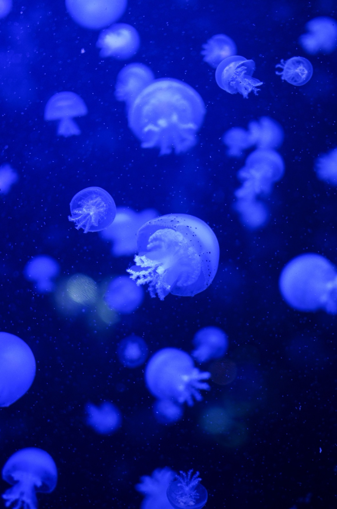
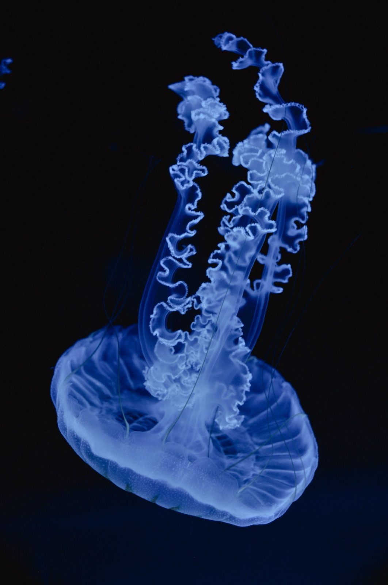

Immersion
His face changes the moment the director calls “cut.” He seems to put real effort into staying immersed — he trained in MMA for a year.


1장 시선
A clear sky and big clouds give me peace of mind — that’s why I chose these.
하늘 01
하늘 02
하늘 03
하늘 04

하늘 05
Starting from washing hands, applying cream, and a good scent — I could build a story that leads to love and family.

손 01
손 02

손 03

손 04
손 05
Road lights against a dark background, seen from above — it felt emotional, so I chose these.

길 01

길 02

길 03

길 04

길 05
2장 사람
나는 이준영이 드라마나 영화 상황에 따라 분위기가 달라지는 것이 끌린다
His face changes the moment the director calls “cut.” He seems to put real effort into staying immersed — he trained in MMA for a year.

I’m drawn to his cold face. In villain roles he acts with his eyes, and he describes himself as introverted and cool-headed.
He chased a drunk driver for over an hour and turned down a model-citizen award. That quiet way of doing good makes me trust him.
3장 공간
나는 마음이 편안해지는 공간을 고른다
Une promenade tranquille
날씨 좋은 날 차 한잔 하기 좋은 2시
모든 것이 오래 아껴진 것 같아서

스스로 빛나는 것들을 오래 바라보기
모든 게 너무 빠르게 느껴지는 날
깊이 내려갈수록 조용해져서

기와 선을 따라 올려다보기
해가 기우는 늦은 오후
오래된 것들이 그대로 있어서

3장 공간 가까이






01\09